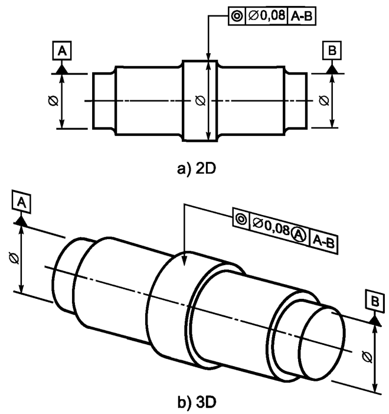
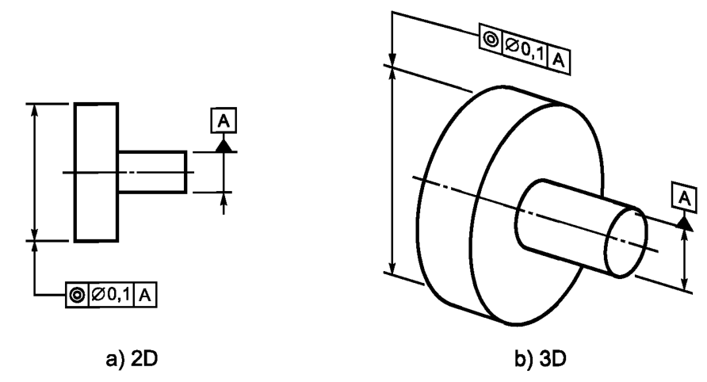
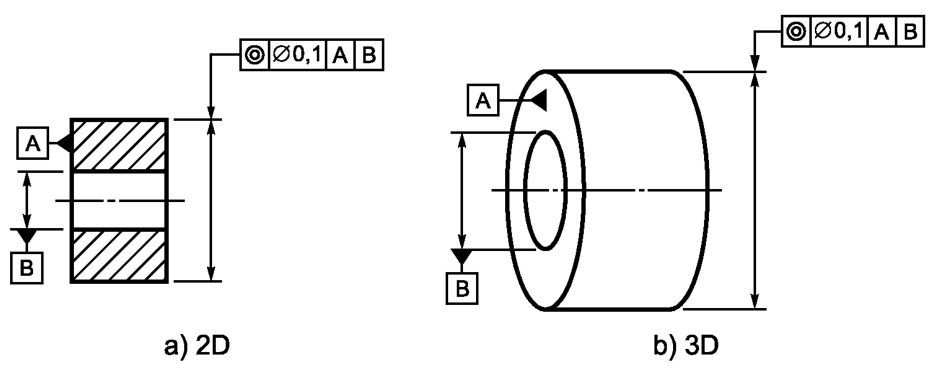

Выявленная средняя линия нормируемого цилиндра должна располагаться внутри цилиндрической зоны диаметром 0,08, ось которой совпадает с общей базовой осью A-В, см. рисунок ниже
Выявленная средняя линия нормируемого цилиндра должна располагаться внутри цилиндрической зоны диаметром 0,1, ось которой совпадает с базовой осью А, см. рисунок ниже
Выявленная средняя линия цилиндра должна располагаться внутри цилиндрической зоны диаметром 0,1 мм, ось которой совпадает с базовой осью В, перпендикулярной базовой плоскости А, см. рисунок ниже
Поле допуска ограничено цилиндром, диаметр которого равен значению допуска t (если перед ним указан знак «ф»), а ось — совпадает с базовой осью, см. рисунок ниже
Примечание - Вторичная база В (ось отверстия), перпендикулярная базе А (не показана), см. рисунок ниже